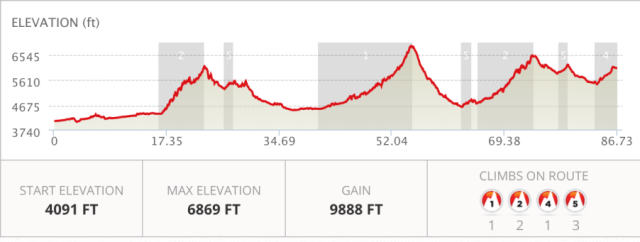
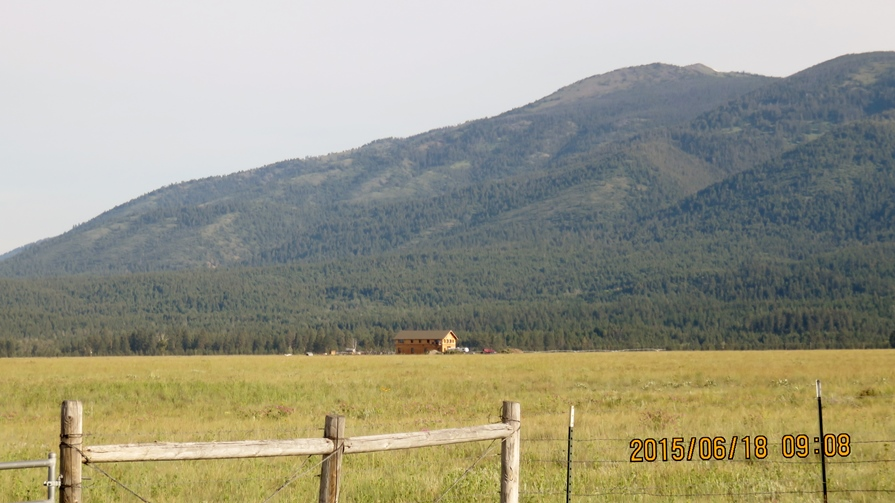
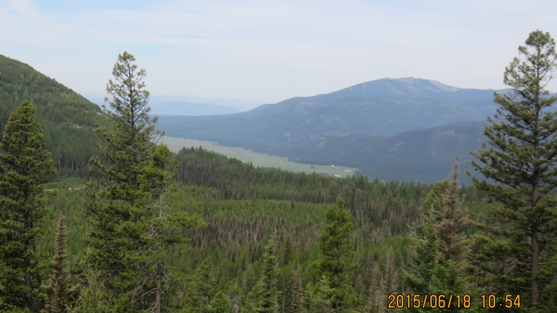
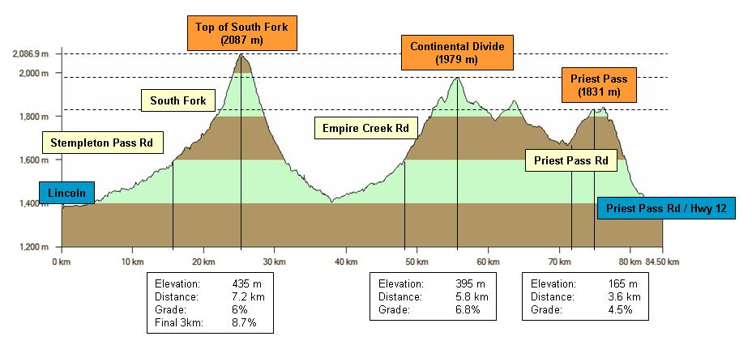

It is by riding a bicycle that you learn the contours of a country best, since you have to sweat up the hills and coast down them. –Ernest Hemingway
Leaving Ovando
 Ovando in the morning
Ovando in the morning
This was a big day. There were three/four climbs between Ovando and Helena with three crossings of the Continental Divide. The goal was to get as far as I could.

The first 17 miles traveled through some nice farms and wide open spaces.

I could see where I was headed

First - Huckleberry Pass


Huckleberry Pass had some very steep pitches and it was a combination of walking and riding over the next 6+ miles and 2+ hours to get to the top.
 Huckleberry Pass
Huckleberry Pass
Not much to see up on Huckleberry Pass but the decent into Lincoln, MT was nice and easy and I stopped for lunch and resupply. It was already past noon and the rest of the day was not looking any better
Second Pass - even more fun

 CD crossing
CD crossing
This second climb took forever. This was not a "headline" mountain pass but it definitely got to many of the people who were riding. The guy who found my camera, Tim Horton, got through the day but quit the following day when he got to Helena. He lasted one more day than last year which was lucky for me since he found my camera the day before. His friend, Darren, was waiting for him at this CD crossing and took the picture. If I dont have my helmet on it means I've been walking for a really long time.
Priest Pass road

When I got to the bottom of the road leading up to Priest Pass it was already 7:30PM and I had been looking for a place to camp. I had an Italian rider who passed me about a mile up the road and a couple miles from the top. He was committed to getting to Helena even though he would be doing a 15 mile downhill in the dark. I walked and he road for at least 30 minutes and he was less than 1/4 mile ahead of me. I decided I would go as far as I could and put up my tent. I was almost 100% walking at this point having been beaten down by the day.
Priest Pass sunset
I had been told earlier that if there are cows there won't be grizzlies. This made sense so as I went to sleep in my tent my biggest fear was getting run over by cattle.

Text by Jim O'Brien . Photographs by Jim O'BrienTD on Flickr.